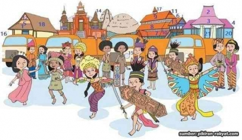
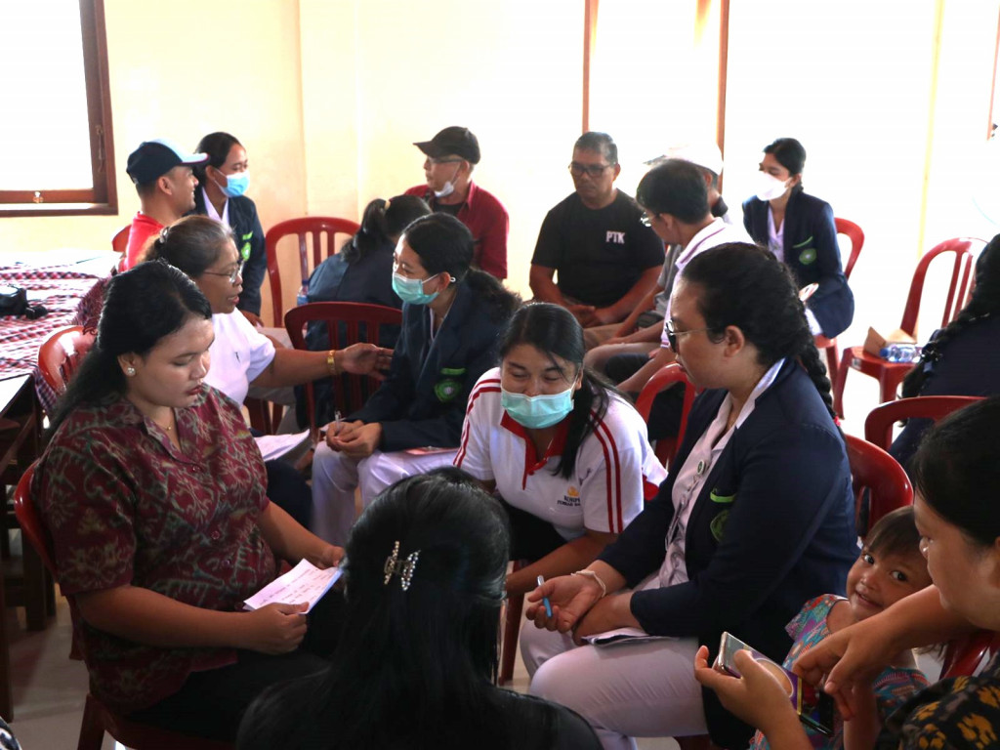

Bab 6: Interaksi, Komunikasi, Sosialisasi, Institusi Sosial, dan Dinamika Sosial
A. Pengantar Konseptual: Manusia sebagai Makhluk Sosial
Sejak awal keberadaannya, manusia tidak pernah hidup dalam kesendirian. Setiap individu dilahirkan, tumbuh, dan belajar dalam ruang sosial—dikelilingi oleh orang lain yang turut membentuk cara berpikir, berperilaku, dan merasa. Dalam pandangan sosiologi klasik, manusia disebut sebagai homo socius—makhluk yang hanya dapat mewujudkan dirinya sepenuhnya melalui kehidupan bersama orang lain.

Letakkan file gambar dengan nama "gambar1" di folder "s1-bab-6"
1. Hakikat Manusia sebagai Makhluk Sosial
Kebutuhan untuk berinteraksi bukan sekadar dorongan biologis, melainkan kebutuhan eksistensial. Seorang anak belajar bahasa dari keluarganya, nilai dari lingkungannya, dan identitas dari kelompok sosial tempat ia tumbuh.
2. Komunikasi sebagai Jembatan Sosial
Interaksi tidak mungkin terjadi tanpa komunikasi. Melalui bahasa, simbol, dan ekspresi, manusia membangun jembatan pengertian.
3. Keterhubungan antara Individu, Kelompok, dan Masyarakat
Struktur sosial terbentuk dari interaksi berulang antara individu dan kelompok. Individu memengaruhi masyarakat melalui gagasan dan tindakan; masyarakat membentuk individu melalui norma dan nilai.
4. Nilai Universal dalam Kehidupan Sosial
- Empati menumbuhkan kemampuan memahami perasaan orang lain.
- Gotong royong mencerminkan semangat kolaborasi khas budaya Indonesia.
- Toleransi menjaga ruang damai di tengah perbedaan.
Refleksi A: Dari Individu Menuju Kesadaran Sosial
Manusia sebagai makhluk sosial tidak hanya berarti "butuh orang lain," tetapi juga "bertanggung jawab atas orang lain." Setiap tindakan pribadi memiliki dimensi sosial.
B. Proses Interaksi dan Komunikasi Sosial
1. Pengertian Interaksi Sosial
Interaksi sosial adalah hubungan timbal balik antara individu, kelompok, atau antar-kelompok yang saling memengaruhi.

Letakkan file gambar dengan nama "gambar2" di folder "s1-bab-6"
2. Syarat Terjadinya Interaksi
- Kontak sosial — ada bentuk hubungan, baik langsung maupun tidak langsung.
- Komunikasi — ada penyampaian dan penerimaan pesan yang memiliki makna sosial.
3. Bentuk-Bentuk Interaksi Sosial
- Kerja sama (cooperation) – individu atau kelompok bekerja bersama mencapai tujuan bersama.
- Persaingan (competition) – dorongan untuk mencapai tujuan tanpa menjatuhkan pihak lain.
- Konflik (conflict) – benturan kepentingan yang dapat memecah atau justru memperkuat solidaritas.
- Akomodasi (accommodation) – proses mencapai keseimbangan setelah konflik.
- Asimilasi – penyatuan dua budaya menjadi pola baru yang disepakati bersama.
C. Sosialisasi dan Pembentukan Identitas Diri
1. Pengertian dan Makna Sosialisasi
Sosialisasi adalah proses pembelajaran sepanjang hayat, di mana individu memperoleh pengetahuan, sikap, nilai, dan keterampilan yang diperlukan agar dapat berpartisipasi efektif dalam masyarakat.
2. Agen-Agen Sosialisasi
- Keluarga: agen pertama dan utama.
- Sekolah: memperluas dunia sosial anak.
- Teman sebaya: membantu individu belajar menegosiasikan peran sosial.
- Media massa dan media digital: membentuk pandangan global dan gaya hidup.
- Masyarakat luas: menjadi ruang praktik nilai-nilai sosial.

Letakkan file gambar dengan nama "gambar3" di folder "s1-bab-6"
D. Institusi Sosial dan Peranannya dalam Kehidupan Masyarakat
1. Pengertian dan Fungsi Institusi Sosial
Institusi sosial dapat didefinisikan sebagai pola perilaku sosial yang telah mengakar dan diakui oleh masyarakat sebagai cara yang sah untuk memenuhi kebutuhan hidup tertentu.
a. Keluarga
Keluarga adalah institusi sosial paling dasar. Ia menjadi tempat pertama seseorang belajar nilai, norma, dan kasih sayang.
b. Pendidikan
Sekolah dan lembaga pendidikan menjadi wahana formal untuk mentransmisikan pengetahuan dan nilai sosial.
c. Ekonomi
Institusi ekonomi mengatur produksi, distribusi, dan konsumsi barang serta jasa.
d. Politik
Institusi politik mengatur kekuasaan dan pengambilan keputusan dalam masyarakat.
e. Agama
Agama berfungsi memberikan makna hidup, arah moral, dan rasa kebersamaan spiritual.
f. Budaya
Budaya adalah wadah ekspresi identitas kolektif dan hasil kreativitas manusia.

Letakkan file gambar dengan nama "gambar4" di folder "s1-bab-6"
E. Dinamika dan Problematika Sosial
1. Faktor Penyebab Dinamika Sosial
a. Faktor Internal:
- Inovasi dan penemuan baru
- Konflik sosial
- Pertumbuhan penduduk
b. Faktor Eksternal:
- Kontak dengan kebudayaan lain
- Perubahan lingkungan alam
- Kemajuan ilmu pengetahuan dan teknologi global
2. Bentuk-Bentuk Perubahan Sosial
- Evolusi Sosial – perubahan lambat dan bertahap.
- Revolusi Sosial – perubahan cepat dan menyeluruh.
- Difusi Budaya – penyebaran unsur kebudayaan dari satu wilayah ke wilayah lain.
- Modernisasi dan Globalisasi
3. Problematika Sosial dalam Masyarakat Modern
- Kemiskinan dan Kesenjangan Sosial
- Pengangguran dan Ketidakpastian Ekonomi
- Intoleransi dan Disintegrasi Sosial
- Disinformasi dan Krisis Kepercayaan
- Kerusakan Lingkungan Sosial dan Alam

Letakkan file gambar dengan nama "gambar5" di folder "s1-bab-6"
4. Upaya Mengatasi Problematika Sosial
- Pendidikan kritis dan etis
- Pemberdayaan ekonomi lokal
- Dialog antarbudaya dan agama
- Pemanfaatan teknologi secara etis
- Pemerintahan yang transparan dan partisipatif
F. Membangun Masyarakat Berkelanjutan dan Global yang Inklusif
1. Pengertian Pembangunan Berkelanjutan
- Ekonomi berkelanjutan: sistem produksi dan konsumsi yang efisien.
- Sosial berkeadilan: distribusi kesejahteraan yang merata.
- Lingkungan lestari: pelestarian sumber daya alam.

Letakkan file gambar dengan nama "gambar6" di folder "s1-bab-6"
Refleksi F: Menjadi Manusia Global yang Lestari
Menjadi manusia global yang berkelanjutan berarti mampu hidup di antara dua kesadaran: kesadaran lokal yang menjaga akar, dan kesadaran universal yang menumbuhkan cabang.